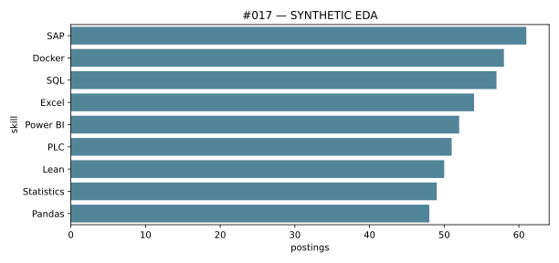

PROJETO #017 · ANÁLISE EXPLORATÓRIA
Industrial & Tech Talent Market EDA
Dados integralmente sintéticos. O estudo utiliza código executado de verdade; não representa desempenho industrial observado, dados externos nem impactos causais comprovados. A visualização Plotly depende de conexão com a CDN do Plotly.
Problema
Mapear tecnologias e salários anunciados em um mercado de vagas sintético.
Metodologia
Frequência de competências, salário mediano e distribuição por região.
Resultados reproduzíveis do dataset
Gráfico gerado por Seaborn / Matplotlib

Abrir gráfico interativo Plotly ↗Métricas estruturadas (JSON) ↗Interpretação
Não são vagas reais: não inferir salários nem disponibilidade no mercado atual.
Decisão possível
Usar integração de dados reais com controle de data e deduplicação para apoiar contratação.